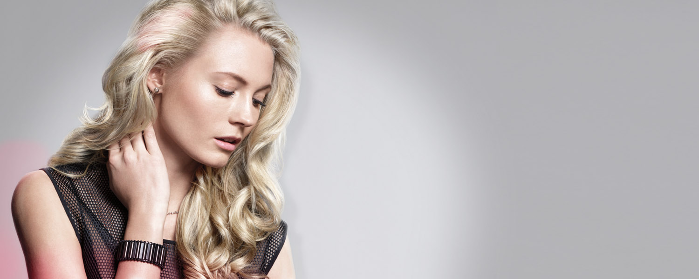

Contact met Kapsalon Kroonjuweel

Belt u ons wanneer u een afspraak wilt verzetten of afzeggen, voor overige
vragen en opmerkingen kunt u het contactformulier hieronder gebruiken, bellen mag natuurlijk altijd.
[contact-form-7 id="61" title="Contactformulier 1"]